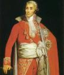

Forums galactiques > Taverne galactique : lieu de discussion informel > Remerciements
Pages : 1 2
| Peer  30/08 ETU 20:56 | C'est étrange en effet car Classement : 4 / 491. Score : 17.57 Devant vous : etic (20.84) Derrière vous : primarque (14.95) |
HK-48 30/08 ETU 21:16 | Erf là anto t'es saigné par tout le monde... |
Marcus30/08 ETU 21:35 | Voici mon classement Votre profil : dirigeant Classement : 6 / 491. Score : 10.9 Devant vous : primarque (14.95) Derrière vous : Zoroastre (10.4) |
sayyadina corp 30/08 ETU 21:37 | Evitez d'écorcher mon nom, c'est : S A Y Y A D I N A C O R P C'est quand meme pas si difficile ?!? |
HK-4830/08 ETU 21:39 | Ben les deux Y sont mal placés et on peut confondre avec sayyadina crot ... ^^ |
Alf 30/08 ETU 21:40 | Aïe Aïe Aïe!!! |
yankee 30/08 ETU 21:41 | Explique ta blague j'ai pas compris ^^ 8O |
sayyadina corp31/08 ETU 11:09 | Lol Archimage qui veut me faire peur avec son pseudo classement!!^^ |
AlphonseHubert 31/08 ETU 15:49 | Merci à Morcar de m'avoir remercié, ça fait toujours plaisir... Et au passage, je m'excuse pour mon départ précipité, surtout auprès de Meluthi, que je me serais fait un immense plaisir d'écraser, mais un week-end prévu au dernier moment m'a empêché de jouer cette dernière semaine (oui, je prends de longs week-ends...). |
Alf31/08 ETU 16:16 | Bien sur, mes premiers remerciements sont destinés à la Trinité créatrice. Il y a tant de commandants que j'aimerais remercier pour des raisons variées mais je redoute une ou plusieurs omissions et je serais peiné de vexer ces anonymes. Alors plutôt que de rendre hommage à ceux que je connais, je me tourne vers ceux que j'ai pu écouter à l'Assemblée Galactique. Tout d'abord, je remercie le commandant Overlord qui enrichit ces interventions d'allégorie hilarantes. J'aime beaucoup votre style certes un peu virulent mais tellement brute de sincérité! Et par la même, je dois remercier tout les commandants qui l'ont fait sortir de ses gonds. Je vous remercie Commandants Etic, Yankee, Hk-48, Karctak, Zoroastre, GéGé, Bodet... pour votre humour, votre décontraction et votre maitrise du second degrés. Je vous félicite Commandants Archimage Antonophix et sa Muse, FlyingBull, Fedayn, Agarash, Ultrémis et Luther pour les personnalités très originales que vous avez su insuffler à vos personnages. Une pensée spéciale pour le Commandant Alphonse-Hubert qui a su aussi bien guerroyer par l'épée comme par la plume. Finalement, je rends hommage à vous tous Commandants d'Apocalypsis V1 qui avez rendu unique l'alchimie de cette partie. Rendez-vous dans le second volet de cette grande aventure... Amicalement, Commandant Alf. |
HK-4831/08 ETU 20:22 | Nous serons dans une galaxie lointaine, très lointaine... ;) Et j'ai oublié de remercier AlphonseHubert et Alcibiade pour la CCCP, car c'est en voyant çàa que je me suis dit "mais alors jusqu'où peuvent aller les hommes pour atteindre leurs buts ?". |
yankee31/08 ETU 20:34 | Moi je remercie bien Agarash et Karctak parce que c'est eux qui m'ont fait connaitre le jeu ... Merci aux autres aussi bien sur, Sayyadina (QUI ENVOIE DES MESSAGES AVEC MON COMPTE SANS QUE JE SOIE AU COURANT ^^, mais c'est bien marrant), L'Atlante qui m'a fait en partie grandir, Etic (et toute sa famille), Snake, pas Kénobi, merci aussi a HK, mllecap, et les autres j'en oublie surement ! A oui j'avais oublié Dieu aussi ! PS: Kénobi c'était pour rire :p |
yable 31/08 ETU 20:44 | Personnellement, je tiens a remercier les quelques personnes que j'ai eu le plaisir de connaitre : - Différents marchands pour leur esprit du commerce et le respect de leur parole : PC-Pwer, Neil Armstrong, Démocles, yankee. - Les quelques alliantistes qui sont restés malgrès un certain desavantage dans cette version et qui m'ont appris a utiliser notre avantage pour le bien du plus grand monde plutot que pour l'avantage des tyrans : Sayyadina, Morcar, karctak. - Ceux que je considère comme des grands commandants autant pour leur diplomatie que pour leur puissance réelle : Etic, L'Atlante, en moindre mesure primarque (car je ne l'ai pas connu a un moment ou il avait le temps d'etre diplomate). - les membres de la confrerie du complot pour avoir animé la galaxie, et surtout m'avoir fait beaucoup rire ^^ - Tous les jeunes commandants qui ont joué leur role malgré une arrivée tardive dans un univers devenu quelque peu chaotique ;) Et tous ceux que j'ai un peu moins connu, mais qui ont animés cet univers autant que l'assemblée : Agarash, HK-48, OverLorD, et bien d'autres que j'oublie malheureusement. Je tiens a remercier tous les joueurs pour etre restés jusqu'au bout dans cette version, et j'espere tous vous revoir dans la suivante des demain ^^ |
Obiwan Kénobi 31/08 ETU 21:28 | Merci a fregger pour m avoir montre la voie de la brutalite merci a greg pour m avoir montre celle de la filouterie et avoir partage mes meilleurs moments dans ce jeu merci a ultremis et luther pour m avoir enseigne l ultremisme, bien que l on retrouve certains de ses traits caracteristiques dans ma maniere de jouer avant de les rencontrer a l exemple du grand gueulisme sans moyens d action Merci a bull pour avoir ete mon adversaire le plus coriace bien que je sois toujours convaincu qu il ait triche A supremiste pour ses kamis par centaines de milliers et son ultremisme modere Merci a alphonsehubert, etic et tous les autres d avoir anime le forum et enfin comme je resterai obiwan jusqu au bout ma black list: andrepierre et consort pour leur minabilite l atlante pour n avoir pas ete assez entreprenant quand il avait les moyens de faire mal HK pour m avoir aboye dessus constamment |
HK-4831/08 ETU 22:16 | C'est un honneur :p |
Pages : 1 2
Forums galactiques > Taverne galactique : lieu de discussion informel > Remerciements